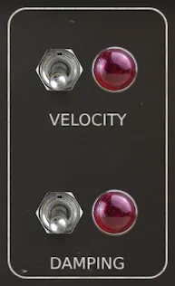
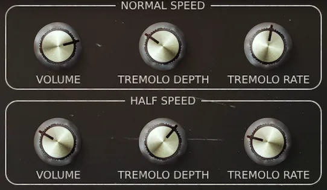
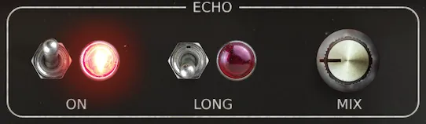
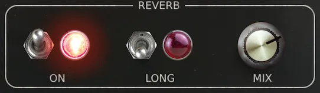
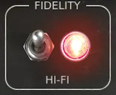

Video
A demonstration of the 4-track Toy Piano library for Decent Sampler.
Included formats
- VST3 (macOS)
- AU (macOS)
- Standalone application (macOS)
- Decent Sampler (macOS, Windows and Linux)
The plugin version is currently released for macOS only. Windows and Linux versions are planned. Until then, the Decent Sampler version covers those platforms.
The plugin version
The plugin is a self-contained instrument, available as VST3, AU and Standalone. Samples, graphics and impulse responses are all embedded in the plugin itself, losslessly compressed, so there are no external files to install or locate. Only the samples for the selected preset are loaded into memory, and a fresh instance lets you choose which preset to load before anything is decoded.
The plugin has all the controls and features from the Decent Sampler version, including MIDI learn, the master volume fader with output meter, value readouts for the knobs and full DAW automation. On top of that, the plugin version adds:
- Drift wheels next to the pitch and modulation wheels, adding a subtle random pitch and volume drift to each voice.
- A velocity curve setting in the settings menu.
The Decent Sampler version
This version of 4-track Toy Piano is an instrument preset / sample library for Decent Sampler. If you're new to Decent Sampler, I recommend checking out this guide first.
Technical specification
| Sample rate | Bit depth | Channels | Number of files | File size | |
|---|---|---|---|---|---|
| Samples | 48 kHz | 24 bit | 2 (stereo) | 72 | 94.60 MB |
| Impulse responses | 48 kHz | 24 bit | 2 (stereo) | 4 | 3.60 MB |
Instrument presets
- Layered
- Normal speed samples and half speed samples are assigned to the same part of the keyboard.
- Layered (Pitch Stretched)
- Like Layered, but the samples are also stretched further down the keyboard for slower and deeper sounds.
- Split
- Normal speed samples and half speed samples are assigned to different parts of the keyboard.
User Interface
Instrument

Velocity and damping
- Velocity
- Determines whether the velocity should affect the volume of the samples
- Damping
- When damping is off, the sample will continue to play after you release the key (like a toy piano)
- When damping is on, the sample will fade out quickly after you release the key
Mixer

Volume
Mix between the normal speed samples and the half speed samples. They also have independent tremolo controls.
Tremolo
The tremolo rate and tremolo depth knobs enable you to modulate the amplitude of the sound with the desired depth and rate using a Low-Frequency Oscillator (LFO).
- Tremolo Rate
- Tremolo rate determines the speed at which the modulation occurs
- Tremolo Depth
- Adjust the Tremolo depth to introduce subtle or pronounced variations in volume
Effects
These effects are achieved using carefully crafted impulse responses. The echo effect employs a Fulltone Tube Tape Echo recorded twice for stereo, while the reverb effect draws from a Chase Bliss Audio & Meris CXM 1978 reverb pedal with a room setting.
Echo

Select from two distinctive echo options: the short echo, delivering a classic slapback effect, and the long echo, characterized by a slower decay and numerous repeats.
- On
- Turns the echo on and off
- Long
- Switches between a short slapback echo and a long echo with slow repeats and high feedback
- Mix
- Mix between direct signal and echo signal
Reverb

You'll also find two reverb effects: the short reverb, evoking the intimacy of a small room, and the long reverb, enveloping your sound in the vastness of a spacious environment.
- On
- Turns the reverb on and off
- Long
- Switches between a short/small room reverb and a long/big room reverb
- Mix
- Mix between direct signal and reverb signal
Fidelity

Hi-fi
When the hi-fi switch is turned on, no effects are applied. When it's turned off, some filtering, saturation and modulation are added for a lo-fi effect. The saturation becomes more pronounced when you turn up the volume in the mixer section.
- Hi-fi
- Turns the lo-fi effects on and off
Release notes
Version 2.1.02026-08-01
The changes in this release apply to the plugin version only. The DecentSampler version is unchanged.
- Added a translucent overlay graphic on top of the interface.
- Keys that are hovered or held on the keyboard are now shaded in a neutral way instead of turning yellow:
- White keys turn darker.
- Black keys turn brighter.
- The computer keyboard keeps playing notes even while you adjust a control with the mouse.
Version 2.0.02026-07-19
- Added a plugin version. See the section "The plugin version".
Version 1.1.02025-01-04
- Removed amplitude envelope for one shot samples
Version 1.0.02024-03-17
- First version released
About this repository
This repository contains the source for both the Decent Sampler library (the DecentSampler folder) and the plugin version. The plugin is a thin wrapper around the shared Dehli Musikk sampler engine, and a converter translates the Decent Sampler library into the engine's native preset format at build time. The audio files are not part of this repository, since the samples are a paid product. The full version is available from store.dehlimusikk.no.